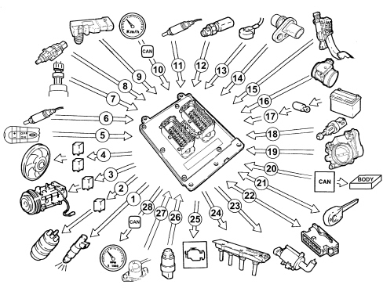
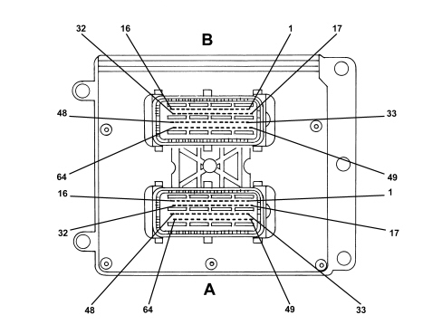
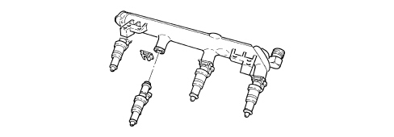
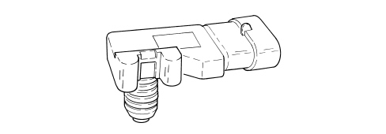
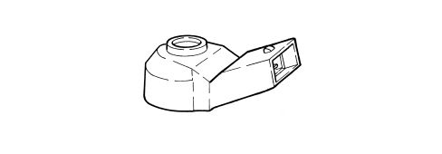
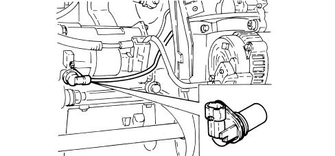
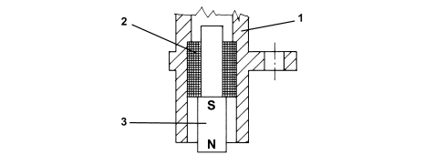
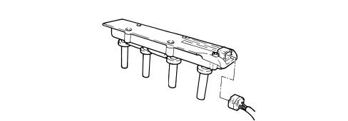

INTRODUCTION - PETROL FUEL INJECTION SYSTEM
- Path
- Descriptions > 10 ENGINE > 1056 PETROL INJECTION SYSTEM > INTRODUCTION - PETROL FUEL INJECTION SYSTEM
- Kind
- system description
- Applies to
- engines: 2.2; all production periods
- Interactive page
- https://sloeber94.github.io/elrnDB-fCrm/en/#/194002112
Applies to: engines: 2.2; all production periods
SPECIFICATIONS
Four cylinder in line engine, ignition management with lost spark, 16 valves, twin overhead camshaft, counter-balance shafts, motorized throttle body; equipped with Motorola E16 injection system with PCB technology control unit.
The unit is a system made up of the engine and all circuits required for its operation:
- fuel supply system
- air supply system
- engine cooling system
- exhaust system with catalytic converter built into the exhaust manifold
- fuel vapour recirculation system.
The operation of these systems is optimised by an electronic control system governed by a control unit.
Operation of the injection-ignition system
The Motorola E16 system with a motorized throttle manages the sequential, phased type electronic injection and ignition function.
The control unit controls the air flow rate at the idling speed set by the electronic throttle.
The control unit controls the ignition time, with the benefit of maintaining smooth engine operation even when environmental and applied load parameters and engine operating conditions change.
The control unit controls and manages the injection so that the air/fuel ratio is always close to the stoichiometric ratio to ensure maximum conversion efficiency for the catalytic converter.
The main system functions are essentially as follows:
- self-learning;
- system self-adaptation;
- autodiagnosis on K line;
- reccognition of Fiat CODE (immobilizer) on CAN serial line + W line (redundant line);
- cold starting check control;
- control of combustion - Lambda sensors;
- detonation control;
- control of mixture enrichment during acceleration;
- fuel cut-off during release of accelerator pedal;
- fuel vapour recovery;
- control of maximum rpm;
- fuel pump control;
- climate control system control;
- cylinder position recognition;
- control of optimum injection time for each cylinder;
- adjustment of ignition advance;
- idle speed management (also dependent on battery voltage - electrical balance management function);
- management of throttle opening laws (accelerator pedal - torque request maps);
- fan control with 3 drivers;
- connection with ABS/ASR/VDC control unit;
- cruise control (where fitted);
- connection with the control panel;
- torque management;
EOBD OPERATION
- fuel system diagnostics;
- catalytic converter diagnostics;
- misfire diagnosis; detection of failed combustion;
- Lambda sensor diagnosis (pollution or signal distortion).
Torque control strategy
The drive-by-wire control systems are vital in satisfying the legal requirements such as fuel consumption and emissions as well as for improving the driveability of vehicles with petrol engines (starting, heating, transition response, safe driving).
The torque for petrol engines is mainly affected by the throttle valve which controls the mass of air introduced by the engine, (depending on the position of the accelerator pedal; more precisely, the request for power by the user, coming from the accelerator pedal, does not directly control the opening of the throttle valve, as in traditional systems with mechanical bowden cables, but is processed electronically by the control unit before being implemented by the throttle electric motor), and therefore also the filling of the cylinder.
In addition to this there are other parameters that affect the variation of the engine torque: the ignition angle, the air/fuel (Lambda) radtio, the deactivation of injection for some cylinders.
INJECTION SYSTEM
The essential conditions to be met by the air-fuel mixture for efficient operation of engines with controlled ignition systems are mainly as follows:
- the metering (air/fuel ratio) must be kept as close as possible to stoichiometric levels to assure maximum catalytic converter conversion capacity (max. efficiency).
- the homogeneity of the mixture, consisting of petrol distributed throughout the air as finely and uniformly as possible.
Information that the control unit processes to control optimum metering is received by electrical signals emitted by:
- air flow meter and (built in) air temperature sensor, for the exact quantity of air taken in;
- rpm sensor that generates a sinusoidal signal whose frequency is an indicator of engine rpm.
The control unit uses this signal to detect MISFIRE.
- throttle potentiometer, to recognize the accelerator request conditions (the dual throttle potentiometer is, in reality, a safety feature of the DbW system and has the main function of monitoring the effective position of the throttle valve controlled by the activating motor, in particular during the management of possible fault conditions and the implementation of recovery strategies).
The torque request information by the driver is recognized by the control unit by means of the accelerator pedal dual potentiometer.
- coolant temperature sensor on the thermostat;
Lambda sensors to determine the oxygen content of the exhaust gases and, via the downstream sensor, to diagnose the efficiency of the catalytic converter.
IGNITION SYSTEM
The ignition system is the static, inductive discharge type (i.e. without a HT distributor) with the power module located inside the DIS (external ignition module).
The ignition system ensures that each coil supplies cylinders 1-4 and 2-3, respectively (lost spark system).
The advantages of this solution are:
- lower electrical overload;
- guaranteed constant discharge at each spark plug.
The control unit contains a memory map with a set of optimum ignition advance values (for the cylinder in combustion phase) that the engine can adopt according to the required speed and engine load.
The control unit corrects the advance value mainly on the basis of:
- engine coolant temperature
- intake air temperature
- detonation.
- throttle valve position.
Information that the control unit processes to control the coils is received by electrical signals emitted by:
- air flow meter and air temperature sensor, for the exact quantity of air taken in;
- rpm sensor that generates an alternating single-phase signal whose frequency is an indicator of engine rpm;
detonation sensor (on the rear part of the crankcase between cylinders 2 and 3) to recognise the cylinder with knock and thus correct the ignition advance;
- throttle position potentiometer to recognise minimum, partial and full load conditions.
DIAGRAM SHOWING INFORMATION ENTERING/LEAVING THE CONTROL UNIT

1. Injectors
2. Fuel pump
3. Air conditioning compressor
4. Solenoid valve with 3 drivers
5. Cruise control lever
6. Lambda sensor downstream of the catalytic converter
7. Air conditioning system freon pressure linear sensor
8. Brake pedal switch
9. Absolute pressure sensor (MAP)
10. Speedometer signal detected by CAN
11. Lambda sensor upstream of the catalytic converter
12. Coolant temperature sensor
13. Detonation sensor
14. Rpm sensor
15. Accelerator pedal potentiometer
16. Air flow meter with built in air temperature sensor
17. Battery
18. Clutch pedal switch
19. Motorized throttle body
20. CAN line
21. Fiat CODE (on CAN and on redundant W line)
22. Diagnostic socket
23. Fuel vapour recirculation solenoid valve
24. Ignition coils and external power module
25. Injection warning light
26. Oil pressure switch
27. Oil level switch
28. Engine rpm signal detected by CAN
SYSTEM OPERATING LOGICS
Self-learning
The control unit implements the self-learning logic in the following conditions:
- removing-refitting or replacement of the injection control unit;
- removing-refitting or replacing the integrated throttle casing;
- removal-refitting or replacement of the rpm sensor/phonic wheel for detection of misfiring.
System self-adjustment
The control unit is equipped with a self-adjustment function that is designed to recognize the changes that take place in the engine due to the processes of bedding in and ageing of both the components and the engine itself in time.
These changes are memorized in the form of modifications to the basic map and are designed to adapt the operation of the system to the gradual alterations in the engine and the components compared with when they were new.
This self-adjustment function also makes it possible to compensate for the inevitable differences in any replacement components (due to production tolerances).
The control unit modifies the basic map in relation to engine specifications when new on the basis of an exhaust gas analysis.
The self-adjustment parameters are not deleted if the battery is disconnected.
Self-diagnosis
The control unit auto-diagnostic system checks that the system is working properly and signals any irregularities by means of an (MIL) warning light in the instrument panel with a standardized ideogram and colour laid down by European regulations. This warning light indicates engine management faults and also faults detected by EOBD diagnostic strategies.
The MIL warning light operating (MIL) strategy is as follows:
- with the ignition on, the warning light comes on and remains on until the engine has been started up. The control unit self-diagnostic system checks the signals coming from the sensors comparing them with the permitted limits.
Fault indication during start up:
- the failure of the warning light to go out when the engine has been started indicates that there is an error memorized in the control unit.
Fault indication during operation:
- the warning light comes on in flashing mode to indicate possible catalytic converter damage due to misfiring.
- the warning light comes on in constant mode to indicate the presence of engine management or EOBD diagnostic errors.
Recovery
From time to time the control unit defines the type of recovery according to the components that are faulty.
The recovery parameters are managed by components that are not faulty.
Fiat code recognition
The moment the control unit receives the ignition ON signal it converses with the Fiat CODE control unit (via the body computer on the CAN serial line; if there are failure conditions on the line, the dialogue takes place on the W line) to obtain the go ahead for starting.
Cold starting control
The following occurs in cold starting conditions:
- a natural weakening of the mixture as a result of poor evaporation of the fuel at low temperatures;
- fuel condensation on inner walls of the intake manifold;
- increased lubrication oil viscosity.
The electronic control unit detects this condition and corrects the injection time on the basis of:
- coolant temperature;
- intake air temperature;
- battery voltage;
- engine rpm.
The ignition advance is determined solely on the basis of rpm and coolant temperature.
Whilst the engine is warming up, the control unit operates the motorized throttle to regulate the quantity of air required to ensure that the engine does not cut out.
The rotation speed decreases proportionally as the engine temperature increases until the nominal value is reached when the engine has warmed up.
Control of combustion - lambda sensors
In EOBD systems, the Lambda sensors are all the same type and located upstream of the catalytic conversion system and downstream of the converter. The upstream sensors monitor concentration and are known as the 1st loop (closed loop of upstream sensor). The sensor downsream of the catalytic converter is used for the fault diagnosis of the catalytic converter (in the Motoroal system the downstream sensor is only used to carry out the catalytic converter fault diagnosis).
Control of detonation
The control unit detects the presence of detonation (engine knock) by processing the signal coming from the relevant sensor.
The control unit continuously compares the signals coming from the sensor with a threshold which is, in turn, continually updated to take into account background noise and engine ageing.
The control unit is therefore capable of detecting the presence of detonation (or the onset of detonation) in each individual cylinder and reduces the ignition advance in the cylinder involved (in steps of 3° up to a maximum of 6°) until the phenomenon disappears. Later on, the advance is gradually restored to the basic value (in steps of 0.8°).
In acceleration conditions, a higher threshold is used to take into account the increased noise of the engine in these circumstances.
The detonation control logic also has a self-adjustment function which memorizes the reductions in the advance that are continuously repeated in order to adapt the map to the different conditions that the engine finds itself in.
Control of enrichment during acceleration
If, during the acceleration request, the variation in the air flow meter signal exceeds a pre-set level, the control unit increases the injection (time) to compensate for the variation in the mixture ratio due to the increased pressure in the intake manifold (less fuel evaporation): this allows the required engine speed to be reached quicker.
Recovery
The control unit replaces the signal coming from the air flow meter which is faulty with the throttle potentiometer signal.
Fuel cut off during deceleration
When the accelerator pedal is released and beyond a pre-set engine speed level, the control unit:
- cuts off the supply to the injectors
- reactivates the supply to the injectors at 1300 - 1500 rpm
If there is no supply, the number of revs decreases with the speed depending on the vehicle driving conditions.
Before the idle speed is reached, the progress of the engine speed decrease is checked.
If it is above a certain value, the fuel supply is partly restored so that there is a "gentle accompaniment" towards the idle speed.
The levels for restoring the supply and for cutting off the fuel vary according to:
- engine coolant temperature;
- vehicle speed;
- engine rpm.
Fuel vapour recovery
Fuel vapours (pollutants) collected in the activated carbon filter (canister) are directed to the intake ports to be burnt.
This takes place by means of a solenoid valve controlled by the control unit only when the engine operating conditions allow.
The control unit compensates for this additional amount of fuel with a reduction in the supply to the injectors.
Control of the maximum revs
According to the rpm level reached by the engine, the control unit:
- above 6800 rpm, cuts off the supply to the injectors (a maximum of 7200 rpm can be reached for not more than 3 secs.).
- below 6800 rpm, injector operation is resumed.
Control of fuel supply - electric fuel pump
The control unit supplies the pump:
- with the ignition ON for 5 secs.;
- with the ignition in AVV and the engine speed > 228 rpm
The control unit cuts off fuel supply to pump:
- with the ignition key in the OFF position;
- with the engine speed < 228 rpm.
The returnless fuel supply system ensures a constant pressure of 3.8 bar.
Connection with the climate control system
When there is a request for power, due to the compressor being switched on, the control unit adjusts the air flow rate with the advantage of maintaining optimum driveability.
The control unit momentarily cuts off the supply to the compressor:
- during starting
- over 6200 rpm
- engine temperature > 112°C.
- during take off with the accelerator fully depressed.
Recognition of cylinder position
During each revolution of the engine the control unit recognizes which cylinder is in the explosion stroke through the timing information coming from the external ignition module and controls the injection and ignition sequence for the appropriate cylinder.
If there is no timing sensor signal, the control unit maintains the phased injection with the vehicle moving.
Adjustment of injection times
The control unit calculates the injector opening time and controls them with extreme precision and speed depending on the:
- rpm;
- air flow rate;
- battery voltage;
- engine coolant temperature.
Adjustment of ignition advances
Thanks to a map stored in its memory, the control unit is capable of calculating the ignition advance depending on:
- the engine load (minimum, partial, full, according to the number of revs and the air flow rate);
- the intake air temperature.
Control of engine cooling fan
Depending on the temperature of the coolant, the control unit controls the engagement of the fan.
There are 4 possible speeds (depending on an internal map).
There is a further control (air conditioning system freon pressure analogue signal from the linear sensor) which switches on the fan in accordance with a memoized table depending on the pressure of the refrigerant gas with the air conditioning system on.
When no coolant temperature signal is present, the control unit implements the recovery function by activating the fan at the maximum speed until the error disappears.
Connection with gearbox control unit (version with aisin transmission)
Communication between the injection-igntion and the gearbox control unit takes place via the CAN line available to both control units.
If there is a gear change (signalled by the gearbox control unit), the control unit reduces the engine torque by:
- reducing the ignition advance
- reducing the throttle opening angle.
Recovery
if the CAN line is faulty, the injection-ignition control unit does not make the torque reductions requested by the gearbox.
The gearbox control unit implements a specific recovery logic.
INJECTION-IGNITION SYSTEM COMPONENTS
Injection-ignition control unit
The control unit is fitted on the engine and withstands high temperatures.
The control unit memory is the flash EPROM type, i.e. it can be reprogrammed from the outside without affecting the hardware. The adoption of the Fiat CODE (key check via the Body Computer) means that control units cannot be swapped between vehicles.
The replacement of the injection control unit with D.V.E. does not require any specific procedure controlled by the diagnostic equipment for the learning of the motorized throttle body, but it does require the self-learning procedure to be carried out for the phonic wheel "CASE LEARN" for EOBD misfire using the appropriate diagnostic equipment control.
Control unit pin out

A1 - Main relay (power supply for injector and power module)
A2 - Not connected
A3 - Not connected
A4 - Not connected
A5 - CAN-H line
A6 - CAN-L line
A7 - Climate control system linear sensor signal
A8 - Not connected
A9 - Not connected;
A10 - Not connected
A11 - Not connected
A12 - Potentiometer signal - accelerator pedal 1
A13 - Potentiometer signal - accelerator pedal 2
A14 - Not connected
A15 - Not connected
A16 - Not connected
A17 - Fan 1st speed operation
A18 - Climate control system linear sensor negative
A19 - Power supply +15/54
A20 - Power supply +30 permanent
A21 - Not connected
A22 - Clutch pedal switch
A23 - Not connected
A24 - Injection system failure warning light (EOBD)
A25 - Cruise Control ON/OFF
A26 - W line
A27 - Brake pedal switch (n.c. side)
A28 - Cruise Control Resume
A29 - Power supply for accelerator pedal potentiometer track 1
A30 - Not connected
A31 - Not connected
A32 - Not connected
A33 - Fan 2nd speed control
A34 - negative for accelerator pedal potentiometer 1
A35 - Cruise Control SET +
A36 - Cruise Control SET -
A37 - CAN-H line
A38 - Brake lights brake pedal switch (n.a. side)
A39 - CAN-L line
A40 - Not connected
A41 - Climate control system linear sensor positive
A42 - Not connected
A43 - Not connected
A44 - Power supply for potentiometer track 2
A45 - Not connected
A46 - Climate control sysem user request switch
A47 - Not connected
A48 - Power supply downstream of main relay
A49 - Not connected
A50 - Negative for potentiometer track 2
A51 - Fuel supply pump
A52 - Not connected
A53 - Not connected
A54 - Engine oil level switch signal
A55 - Not connected
A56 - Not connected
A57 - Not connected
A58 - Not connected
A59 - K line
A60 - Not connected
A61 - Fan 3rd speed operation
A62 - Not connected
A63 - Not connected
A64 - Power supply downstream of main relay
B1 - Not connected
B2 - Not connected
B3 - Not connected
B4 - Detonation sensor (negative side)
B5 - Upstream Lambda sensor signal positive
B6 - Upstream Lambda sensor signal negative
B7 - Downstream Lambda sensor signal positive
B8 - Engine coolant temperature sensor.
B9 - Not connected
B10 - Air temperture sensor incorporated in the flow meter (signal)
B11 - Not connected
B12 - Absolute pressure sensor (signal)
B13 - Coil control signal for cylinders 2-3
B14 - Not connected
B15 - Engine oil pressure switch
B16 - Not connected
B17 - Petrol vapour recovery valve
B18 - CAM timing information coming from external ignition module
B19 - Downstream Lambda sensor signal negative
B20 - Not connected
B21 - Not connected
B22 - Not connected
B23 - Rpm sensor negative
B24 - Not connected
B25 - Motorized throttle potentiometer signal 2
B26 - Rpm sensor positive
B27 - Coil control signal for cylinders 1-4
B28 - Motorized throttle potentiometer signal 1
B29 - Flow meter signal
B30 - Motorized throttle potentiometer positive 1
B31 - Motorized throttle potentiometer positive 2
B32 - Absolute pressure sensor in intake manifold positive
B33 - Cylinder 1 injector control
B34 - Motorized throttle potentiometer negative 1
B35 - Motorized throttle potentiometer negative 2
B36 - Not connected
B37 - Detonation sensor
B38 - Engine coolant temperature sensor (negative side)
B39 - Not connected
B40 - Not connected
B41 - Not connected
B42 - Absolute pressure sensor negative
B43 - Not connected
B44 - Not connected
B45 - Not connected
B46 - Motorized throttle closing control
B47 - Motorized throttle opening control
B48 - Not connected
B49 - Cylinder 2 injector control
B50 - Cylinder 4 injector control
B51 - Cylinder 3 injector control
B52 - Not connected
B53 - Not connected
B54 - Not connected
B55 - Not connected
B56 - Not connected
B57 - Upstream lambda sensor heater control
B58 - Air temperture sensor incorporated in the flow meter (negative side)
B59 - Not connected
B60 - Not connected
B61 - Not connected
B62 - Downstream lambda sensor heater control
B63 - Motorized throttle closing control
B64 - Motorized throttle opening control
Injectors
The injectors are the twin jet type and are fitted on the injector carrier manifold. A safety clip secures the injectors to the manifold and two o-rings assure the seal.
The injectors are responsible for delivering the required amount of fue to the engine. They are devices with open/closed operation, therefore they let the fuel pass if open. The opening time and consequently the amount of fuel injected are decided by the engine management control unit.

Accelerator pedal potentiometer
The sensor consists of a casing secured to the accelerator pedal; the case contains an axially-located shaft connected to two potetiometers: a main potentiometer and a stand-by potentiometer.
A coil spring on the shaft ensures the correct amount of resistance to pressure while a second spring ensures return following release.
The accelerator pedal position is converted into an electrical voltage signal and sent to the control unit by the potentiometer connected to the pedal. The accelerator pedal position signal is processed together with the information relating to the engine rpm to obtain the injection times and the position of the motorized throttle.
Insufficient oil pressure sensor
The sensor is located on the crankcase near the oil filter. The control unit controls the signal which is used for:
- showing the message in the multifunction display;
- switching on the warning light in the panel.
It does not switch the MIL warning light on.
Absolute pressure sensor
This sensor is fitted on the intake manifold and controls the pressure of the air introduced into the cylinders. Together with the flow meter signal it is designed to check the right amount of air destined for the individual cylinders for the correct calculation of the air fuel ratio.

Engine coolant temperature sensor.
It is fitted on the thermostatic cup and incorporates the sensitive elements (2 NTC) in a single body which tranform the variations in temperature into variations in resistance thereby allowing the temperature of the engine coolant to be measured.
The sensor is designed using semiconductor technology. In other words, if the temperature of the sensor increases as the temperature of the coolant increases, the resistance value decreases.
Because the resistance does not change in linear fashion as the temperature increases, it is relatively higher at low temperatures than at high temperatures.
The following functions are involved with the sensor:
- information for the instrument panel to provide a reading for the driver.
The NTCs connect the sensor casing to an insulated earth therefore the sensor has a four-way electrical connection.
The engine coolant temperature sensor also informs the climate control system control unit.

Detonation sensor
The piezoresistive type detonation sensor is fitted on the crankcase between and measures the intensity of vibrations caused by knock in the combustion chambers.
The piezoresistant crystal in the sensor detects vibrations generated at frequencies between 12 and 16 Hz and converts them to electrical signals that are sent to the injection control unit.

Rpm sensor
The sensor is fitted on the cylinder block/crankcase facing the flywheel on the crankshaft.

Operation
The sensor takes the form of a tubular case (1) containing a permanent magnet (3) and an electrical winding (2).
Due to the passage of the phonic wheel teeth, the magnetic flux set up by magnet (3) undergoes fluctuations due to changes in the gap.
These fluctuations set up an electromotive force in winding (2) and a voltage is set up at the terminals that is alternatively positive (tooth facing sensor) and negative (gap facing sensor).
The rpm sensor peak output voltage depends, all else being equal, on the distance between the sensor and the phonic wheel teeth (gap).

Throttle casing with d.v.l.
This is fitted on the air chamber and regulates the amount of air taken in by the engine.
According to the signal received from the accelerator pedal potentiometer, the engine management control unit controls the throttle opening by means of a direct current motor built into the integrated throttle body with D.V.L.
Throttle opening takes place from 0° to 80°, i.e. including idle speed adjustment range.
The DVL integrated throttle body is equipped with two built-in potentiometers, each of which controls the other.
If both potentiometers should fail or in the case of a power cut, the control unit reduces drive torque on the basis of accelerator pedal position.
- with the accelerator pedal fully depressed, it cuts off fuel to one or more cylinders until a maximum speed of 2500 rpm is reached;
- in the intermediate positions, it cuts off the supply to one or more cylinders until a speed below 2500 rpm is reached.
The self-learning procedure must be carried out if the injection control unit or the air chamber or the throttle casing integrated with D.V.L, is replaced.

Air flow meter
The flow meter has the function of measuring the mass of air in the intake manifold; it also includes an air temperature sensor for adapting the calculation to the actual density of the intake air.
D.i.s. module
It forms an integral part of the engine management system.
The two primary windings are engaged and de-energized by means of the ignition phases in the engine management control unit. The secondary windings supply the pairs of cylinders 1-4 and 2-3 simultaneously. When the engine is started injection and ignition takes place in the third cylinder. The ignition voltage required for the cylinder with the mixture ready is greater (10-25 kV) than that for the cylinder in the exhaust stroke (5 kV). This determines the direction of the current between the two spark plugs. Therefore the ignition module recognizes the direction of the current and co-ordinates the injection impulse for the respective cylinder. The sensor involved replaces the timing sensor. If this sensor is faulty, the injection impulse is sent simultaneously for both cylinders.
This module recognizes the ignition phase, in other words the moment the spark strikes at the spark plug in a given cylinder on the basis of the electrical absorption detected by the control unit for the spark plugs.
